自学更新
2026-10-23 · 自学更新 2026-10-23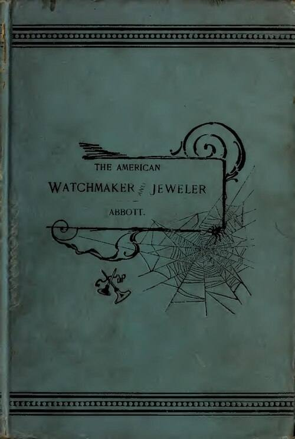
书 · H. G. Abbott《The American Watchmaker and Jeweler》19世纪末美国钟表珠宝百科:工具、合金、焊料、抛光,按字母查;公版可读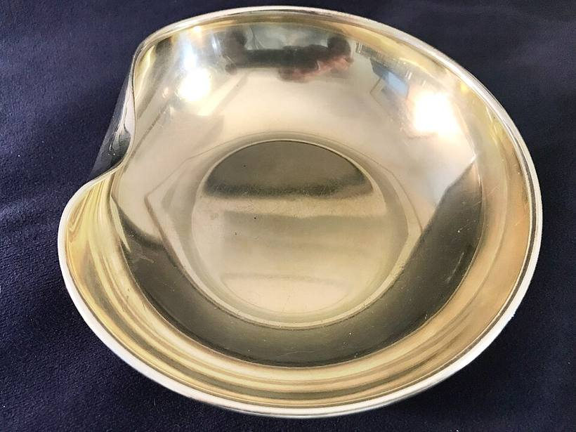
人物 · 艾尔莎·佩雷蒂 Elsa Peretti1940–2021,1974起为蒂芙尼设计:骨形手镯、豆子、开放之心,银也能做得像雕塑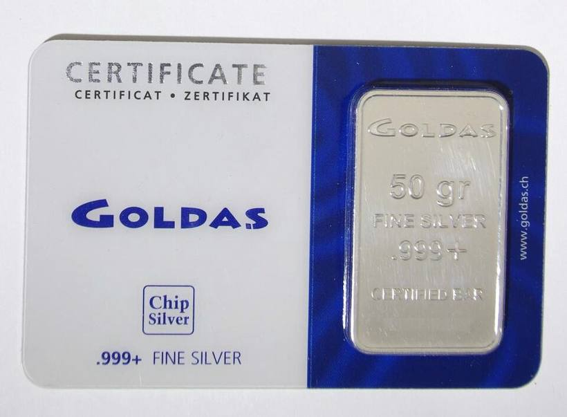
趋势 · 银价高 → 银饰需求降世界白银协会:银价2026年1月破121美元/盎司;预计2026银饰需求降约16%至1.594亿盎司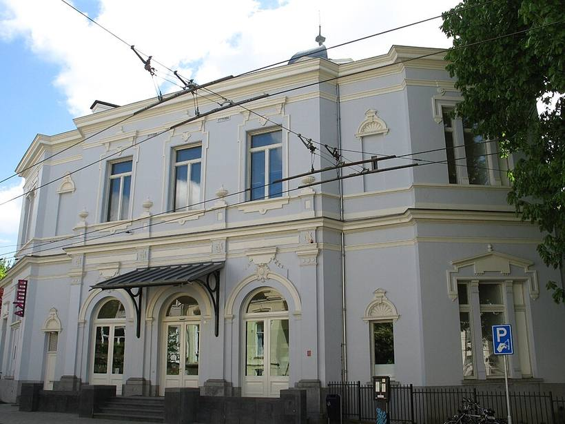
展览 · 阿纳姆博物馆《ENSOULMENT》Ruudt Peters荷兰当代首饰先锋50年回顾 · 2026.11.21–2027.2.7(以官网为准)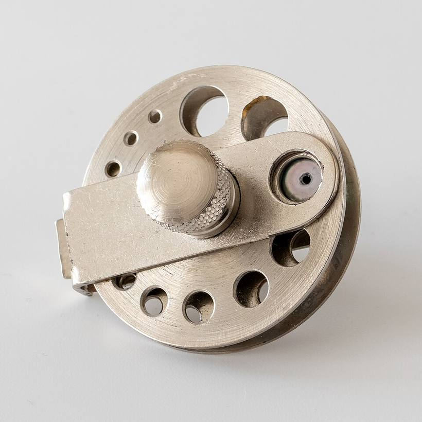
技巧 · 珍珠打孔珍珠夹进夹具固定,细钻头从两头各钻一半在中间汇合,孔不歪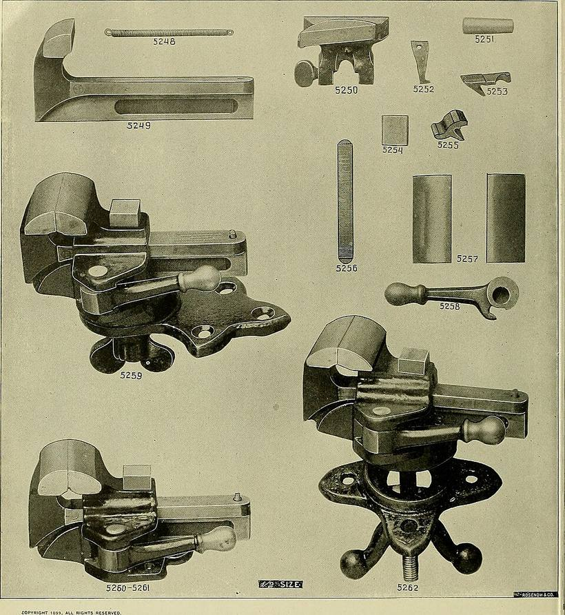
资源 · Ganoksinganoksin.com:免费珠宝工艺知识库+论坛,焊接、镶嵌、金属问题都能搜;图为1899年工具目录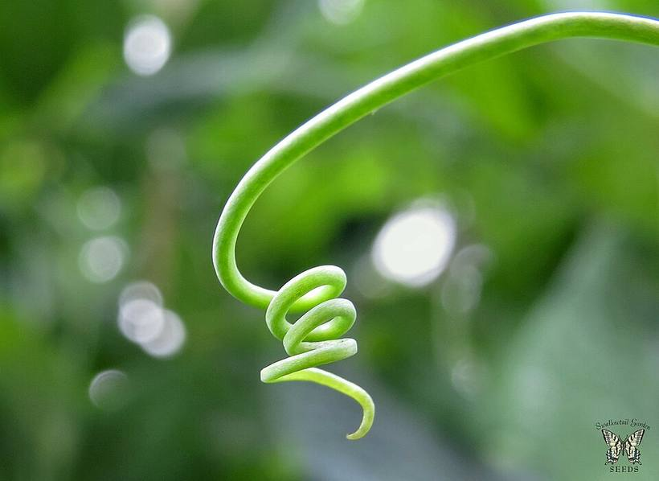
练习 · 豌豆卷须铁丝绕铅笔做一段弹簧卷须,末端挂一颗小珍珠,做耳坠 2026-10-21 · 自学更新 2026-10-21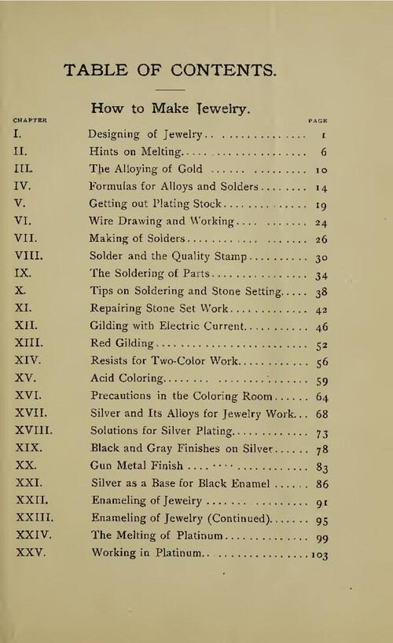
书 · G. S. Overton《How to Make Jewelry》1914美国珠宝作坊手册:合金配方、拉丝、焊接、着色、珐琅;公版可读;图为目录页人物 · 贝蒂·库克 Betty Cooke1924–2024 巴尔的摩:自学成才,“圆与线”极简几何首饰;图中戴的是她自己的作品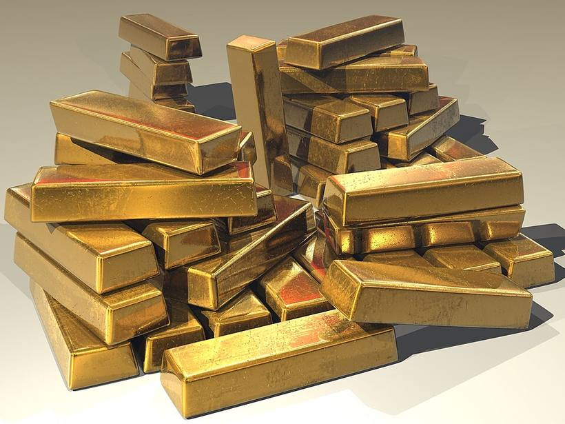
趋势 · 金价高 → 首饰变轻世界黄金协会:2026 Q2 全球金饰278吨(同比-17%,中国-28%);轻量、低K、镀金银走俏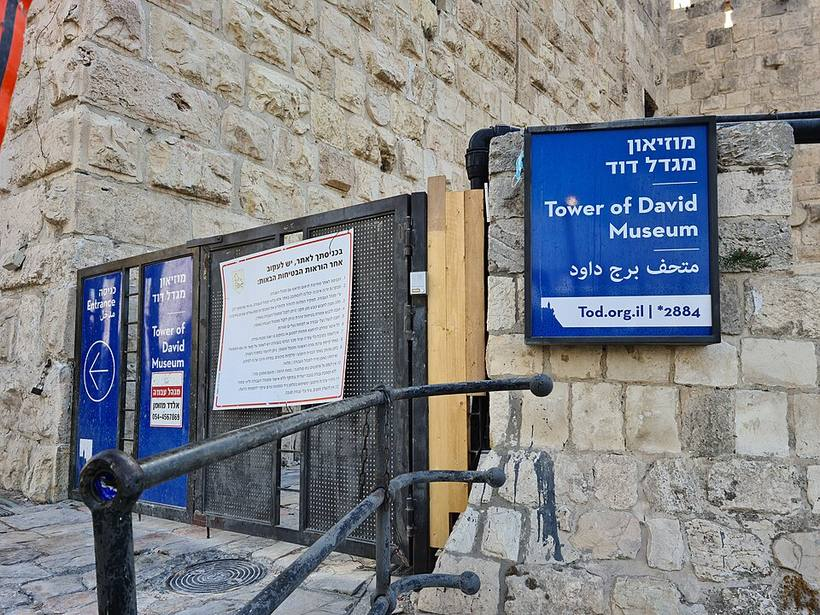
展览 · 耶路撒冷大卫塔博物馆《Gold》当代艺术里的金箔、金粉、金线 + 古代金饰 · 2026.10.29–2027.3(以官网为准)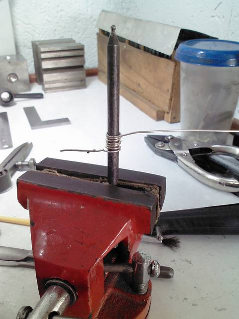
技巧 · 开口圈 Jump rings丝绕在圆棒上→锯开成圈;开合要前后“拧”,不要左右拉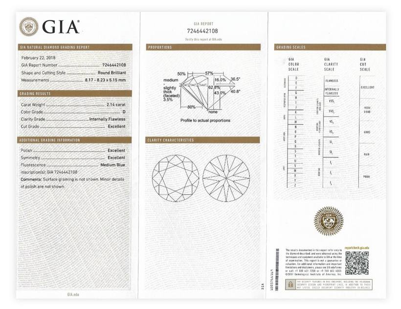
资源 · GIA《Gems & Gemology》1934年至今全部期刊免费PDF:宝石、珍珠鉴定一手资料;图为GIA证书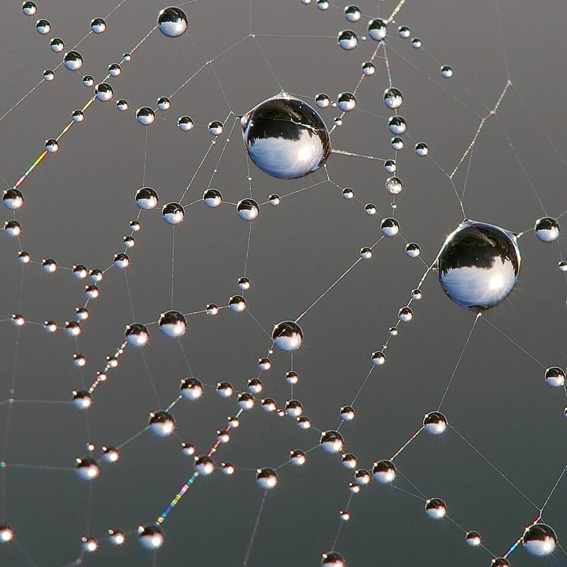
练习 · 蛛网露珠铁丝做放射骨架+螺旋绕线,小珍珠当露珠,做一枚胸针 2026-10-19 · 自学更新 2026-10-19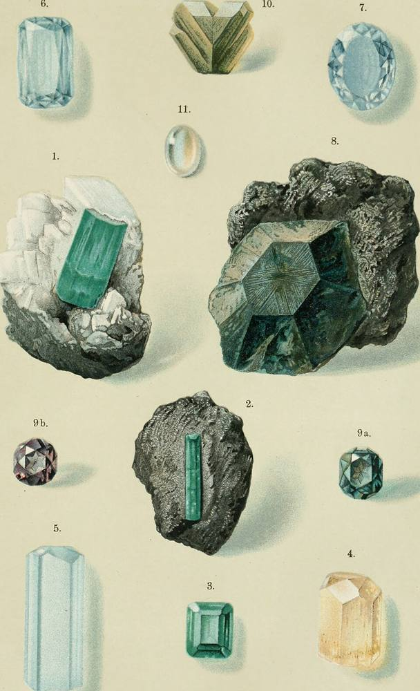
书 · 马克斯·鲍尔《Edelsteinkunde》1896经典宝石学教科书:性质、产地、鉴别;彩色图版公版可读(英译本《Precious Stones》1904)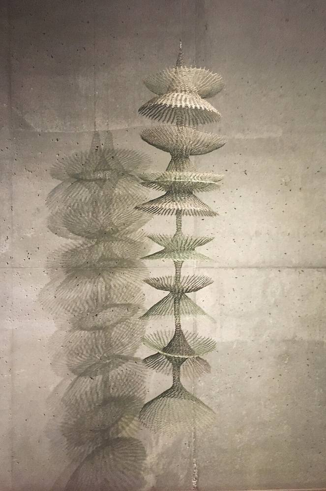
人物 · 露丝·浅川 Ruth Asawa日裔美国艺术家:1947在墨西哥学会打圈法,一根金属丝钩出层层透明的“葫芦”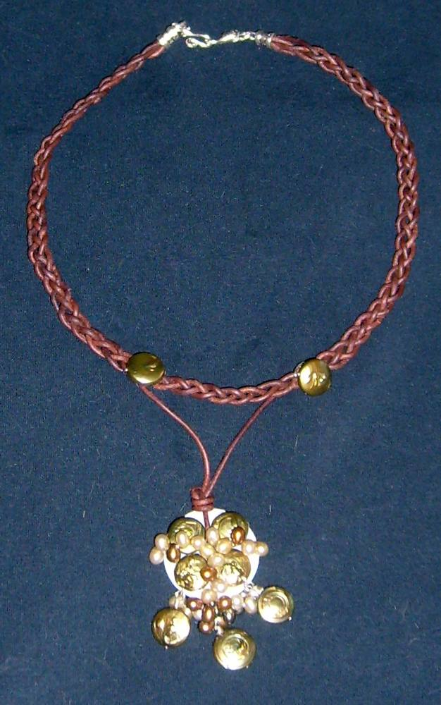
趋势 · 珍珠“去正式化”珍珠配编织皮绳、银丝,日常可戴;图为皮绳+淡水珠+银丝项链展览 · 克莱斯勒艺术博物馆《Constellations》达拉斯艺术博物馆藏350余件当代首饰 · 230多位艺术家 · 2026.7.10–2027.1.3(以官网为准)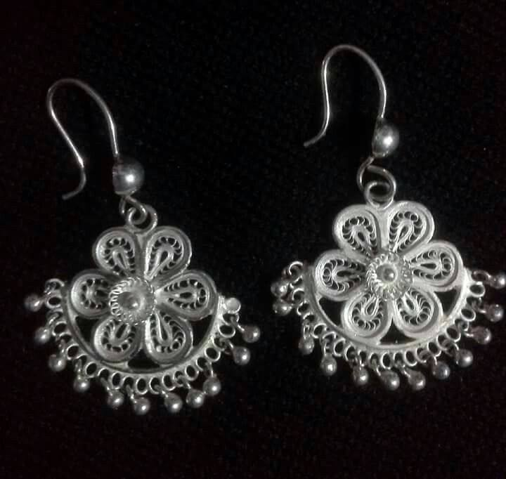
技巧 · 花丝 Filigree两股细丝拧麻花→压扁→盘进粗丝外框再焊;图为奥里萨卡塔克 Tarakasi 银花丝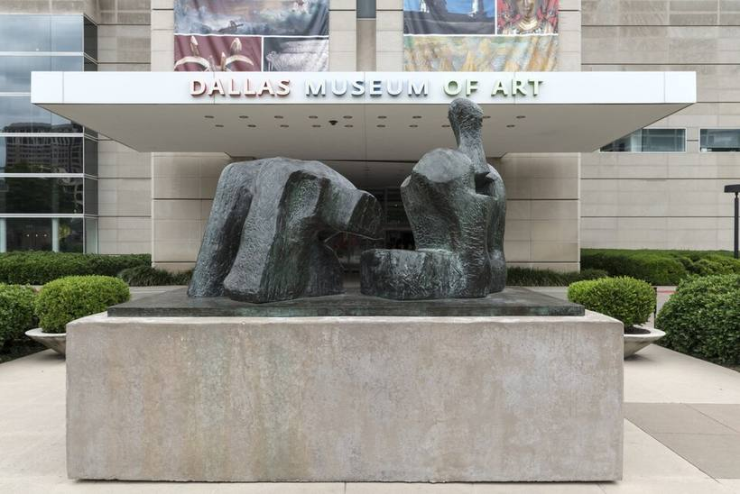
资源 · 达拉斯艺术博物馆线上藏品免费检索:含 Inge Asenbaum 现当代首饰收藏,作品图+资料练习 · 放射虫笼照海克尔《自然的艺术形态》图版:铁丝绕一个小镂空笼,把一颗珍珠“关”在中间 2026-10-17 · 自学更新 2026-10-17书 · 孔兹 & 史蒂文森《The Book of the Pearl》1908珍珠百科:历史、产地、养殖;公版可读人物 · Ed Wiener美国现代主义首饰人:银片+线条,像小雕塑(1951)趋势 · 原石/毛坯宝石不切割、直接打孔串:粗糙质感配铁丝正好展览 · 亚布洛内茨玻璃与首饰博物馆《Revision》新艺术→当代首饰 · 2026.10.23–2027.9.12(以官网为准)技巧 · 绕圈收口 Wrapped loop穿珠后铁丝绕2–3圈收死:珍珠链最基本的一环资源 · 库珀·休伊特设计博物馆线上藏品免费检索:首饰、设计稿、纹样练习 · 扭丝 Torc两根铁丝拧成麻花,弯成一个项圈
2026-10-15 · 自学更新 2026-10-15书 · Haslope《Repoussé Work for Amateurs》公版錾刻入门(Internet Archive 可读);图为一套錾子人物 · Wendy Ramshaw以“叠戴戒指组”成名;图为她的 V&A 金属屏风趋势 · 海螺珠 Conch pearl天然、非珍珠层,粉色“火焰纹”,稀有展览 · 安特卫普 DIVA《Rings That Rock》七百年钻石戒指 · 2026.10.15–11.8(以官网为准)技巧 · 珍珠链收尾珠间打结 + 扣头:断线也不散资源 · 荷兰国立博物馆 Rijksstudio公有领域藏品高清图免费下载,首饰可细看练习 · 双螺旋照青铜时代胸针,用一根铁丝盘出两个螺旋
2026-10-13 · 自学更新 2026-10-13书 · Steve Midgett《Mokume Gane: A Comprehensive Study》木目金专著 · 作者官网可免费读全书人物 · Mary Lee Hu金属丝像织布一样“编”成首饰趋势 · Charm 挂件叠戴一条链挂多枚小件:小珍珠、铁丝小雕塑都可当 charm展览 · 普福尔茨海姆《Silver Lining》第21届银器三年展 · 至 2027.1.6(以官网为准)技巧 · 失蜡铸造雕蜡 → 包石膏 → 烧蜡 → 浇金属资源 · 伯明翰珠宝区博物馆老作坊原样保留,看真实工作台练习 · 学 Arline Fisch 用丝“钩织”细铁丝钩一片5cm小网,兜住一颗珍珠
Arline Fisch 著《Textile Techniques in Metal》
2026-10-11 · 自学更新 2026-10-11书 · H. Wilson《Silverwork and Jewelry》1903公版金工教科书,含拉丝、镶珍珠人物 · 御木本幸吉养殖珍珠产业化先驱趋势 · 马贝半珠 Mabe贝壳内壁长成的半圆珠,适合平背镶展览 · 京都国立近代美术馆《Reflections in Jewellery》2026.10.24 起(以官网为准)技巧 · 拉丝板自己把铁丝/银丝拉细、拉匀资源 · 史密森国家宝石收藏线上可看珍珠与宝石标本练习 · 铁艺单元复刻用一根铁丝复刻图中一朵小花单元


_4_(16848647509).jpg){kind=link}

_Emerald_crystal_in_its_matrix.jpg){kind=link}


.jpg){kind=link}
.jpg){kind=link}


_-_c.jpg){kind=link}
.jpg){kind=link}
.jpg){kind=link}


.jpg){kind=link}


_by_Alexander_Calder,_c._1928,_brass_wire_and_wood.JPG){kind=link}
.jpg){kind=link}


_(14597521469).jpg){kind=link}
.jpg){kind=link}


.jpg){kind=link}


_from_Cuttack,_Orissa.jpg){kind=link}


,_%D0%A1%D0%A1%D0%A1%D0%A0,_1978.png){kind=link}


.jpg){kind=link}

.jpg){kind=link}


.jpg){kind=link}


.jpg){kind=link}